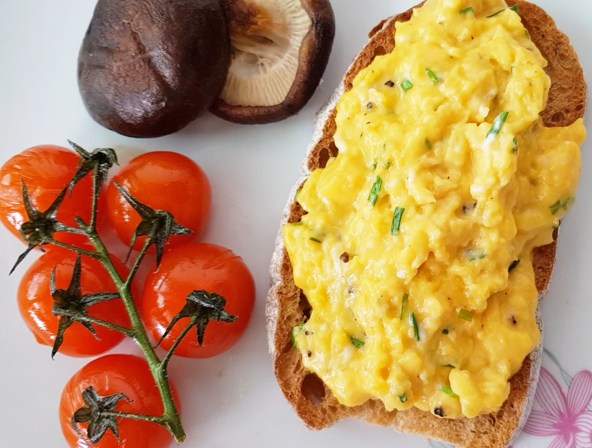

Scrambled Eggs-Gordon Ramsay

Description
Scrambled eggs are probably one of the easiest breakfasts you can make, yet everyone has a different way of making them.
And while many of us probably follow the scrambled egg recipe that our parents or grandparents taught us,
there are so many delicious methods out there that we might be missing out on.
You make the eggs in a saucepan and keep removing them from the heat while stirring constantly.
Although cooking the eggs didn't take the entire 3 minutes that Gordon suggests,
it did work wonders to create fluffy eggs. Plus, the crème fraîche touch at the end adds a nice tangy flavor and creamy texture.
Ingredients
- 6 cold eggs
- 15g butter
- Salt and pepper
- Crème fraîche
- Chives
Steps
- Crack 6 cold eggs into a deep saucepan.Crack 6 cold eggs into a deep saucepan.
- Add the butter. For smaller batches, use a 2-to-1 eggs-to-butter ratio.
- Put the pan on high heat.
- Stir continuously with a rubber spatula—don't whisk—making sure to scrape the bottom of the pan
- After 30 seconds, take the pan off the heat. Keep stirring. After about 10 seconds, put back on the heat. Repeat for 3 minutes.
- In the last minute, season the eggs lightly. For extra creamy texture, stir in 1 tsp of crème fraîche.
- Plate and garnish with chopped chives.